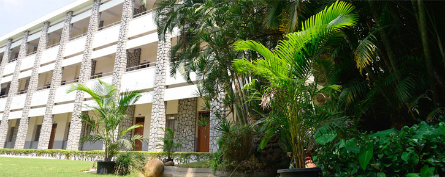
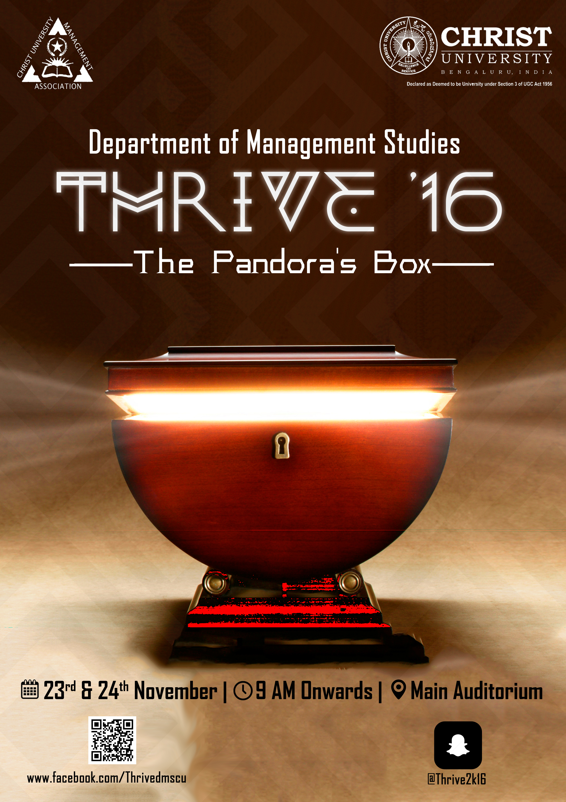
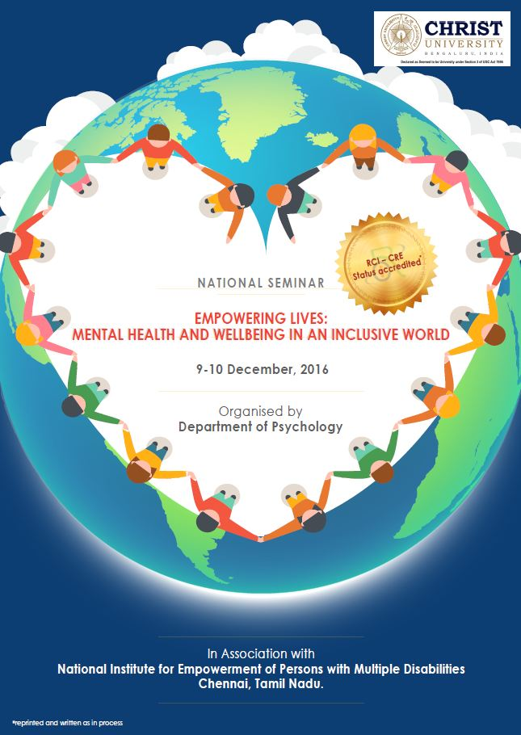

Admission
Christ University is secular in its outlook and welcomes students from all castes, religions, creed and languages to be a part of the Christite family. Christ University, formerly Christ College, was an Autonomous institution since 2005.
Academics
The University has Twelve Schools of Study - Mathematics and Statistics, Physics, Chemistry, Life Sciences, Humanities, Social Sciences, Management Studies, Sarojini Naidu School of Arts & Communication, Engineering Sciences & Technology, Medical Sciences, Economics and Computer/Information Sciences.
Campus
Students, coming from all over India, get exposed to different religions and customs . We pamper students by providing amenities and groom them to manage their routine independently, tuning students to the real aspect of life, however letting them enjoy the comforts of reading newspapers and books, providing them nutritious vegetarian,round the clock water supply etc.
OVATION

The University was selected for the Best Campus Award by the Mysore Horticulture Society, Lalbagh for twenty-seven consecutive years, 1988 through 2015.
Well-maintained gardens and buildings, air-conditioned Seminar Halls, Panel Room, Conference Hall, Assembly Hall, Auditorium, Health Club, Kiosk, Hostel Facility for girl students and all the requirements of an institute of higher learning are the unique features of our University.
The Physical Education Department organises many sports and games events during the academic year where university team selections take place. Special coaching camps are held for Football, Basketball, Throwball, Hockey and Volleyball teams.
The annual intercollegiate sports festival, Chri-Spo is normally held in month of August of every year. In this prestigious intercollegiate sports festival, events in Football, Basketball, Hockey, Volleyball and Throwball for men and women are held.
LATEST NEWS

THRIVE '16 Organized by Department of Management Studies

Quiz 2015 - Christ University National Quiz Championship

National Seminar organized by Department of Psychology